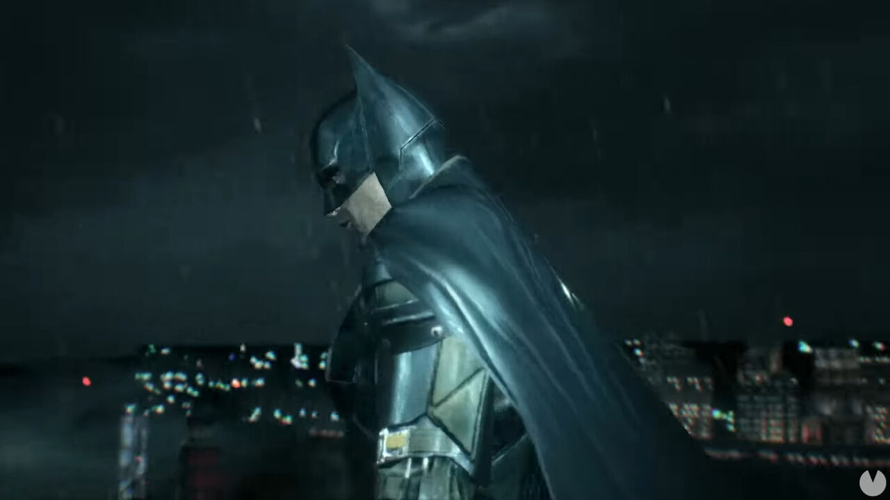

Traje y herramientas de Batman

Básicamente es un traje que recubre todo su cuerpo y cuenta además con una máscara y una capa que le permiten planear. Batman lleva este traje tanto para ocultar su identidad como para asustar a los criminales en su papel de vigilante clandestino. La mayoría de las versiones del Bat-traje incorporan algún tipo de armadura, y con frecuencia una máscara con lentes de visión nocturna, varios filtros de gas, y otras herramientas de combate. Todas las versiones del uniforme llevan un cinturón de armas no dañinas que lo ayudan a combatir el crimen.
Traje básico
El traje básico de Batman es cómo el de cualquier otro superhéroe, una capa y una máscara aunque debido al avance de la tecnología en Estados Unidos fueron modificadas ciertas cosas al traje, por ejemplo al traje se le pegaron pedazos de chalecos antibalas para evitar ser dañado por los criminales, durante principios del 2000 el traje pasó a ser una armadura y era imposible perforarla.
Capa
Para crear el diseño de la capa, Bob Kane se basó en el arte de Leonardo da Vinci. La capa es de gran utilidad para Batman, puesto a que le sirve para planear, en ningún cómic se muestra el porqué, esta capa puede expandirse y permitirle a Batman volar aunque en Batman Begins se muestra que la capa está hecha de varias telas, las cuales provocan que la capa sea vulnerable a la más mínima cantidad de electricidad, lo cual conlleva a que la capa se expanda cuando sea electrificada, Batman usa esto a su favor, puesto a que el aire tiene cargas eléctricas, y deduce que cuando brinque de un edificio la capa se expandiera y podrá planear.
Cinturón
Artículo principal: Cinturón de herramientas de Batman
Batman posee un cinturón, el cual tiene muchos compartimentos donde Batman guarda armas, pero debido a su filosofía de no asesinar gente, usa armas no letales como Batarangs, pequeños bumeranes o shurikens con forma de murciélago, que en ciertas ocasiones poseen una especie de tranquilizante. Además el cinturón posee herramientas que lo ayudaran en su camino, como es el caso de unos lentes de visión nocturna o la Bat-Linterna.
Variantes
Batman mantiene varios trajes para tratar con situaciones extraordinarias; por ejemplo, en una ocasión crea un traje anti-llamas para poder tratar con Firefly, o un traje térmico para no ser congelado por Sr. Frío. Además de estas variantes a lo largo de los años ha presentado trajes alternativos o trajes en los que sólo varia el color.